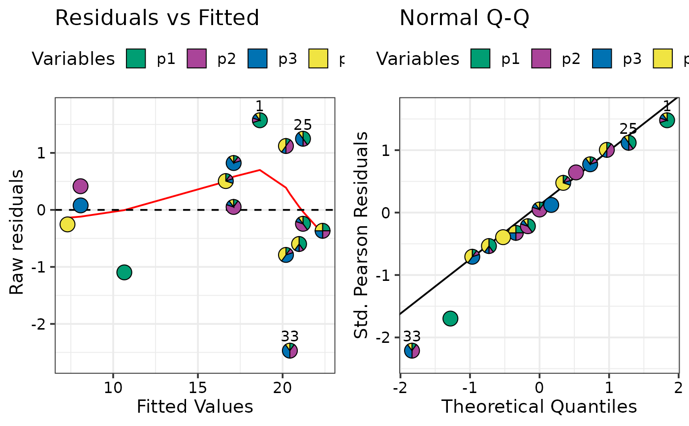
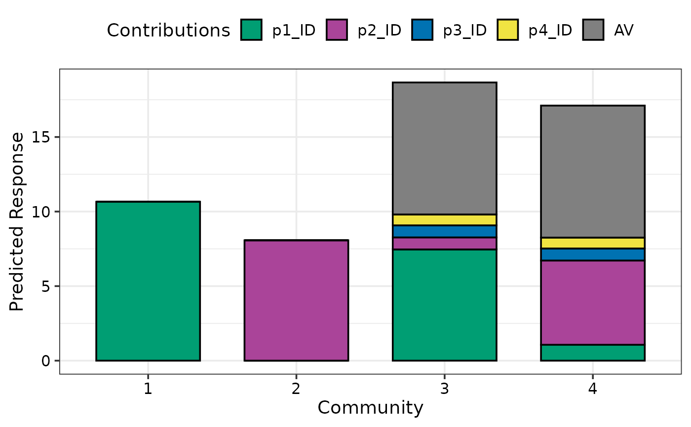
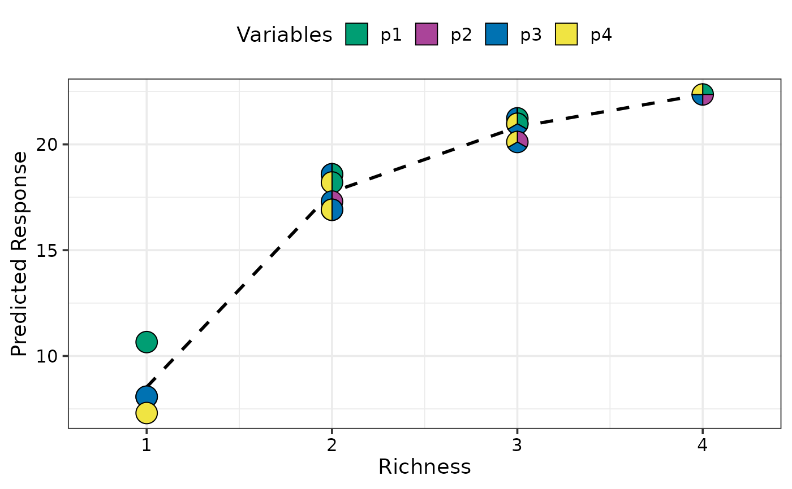
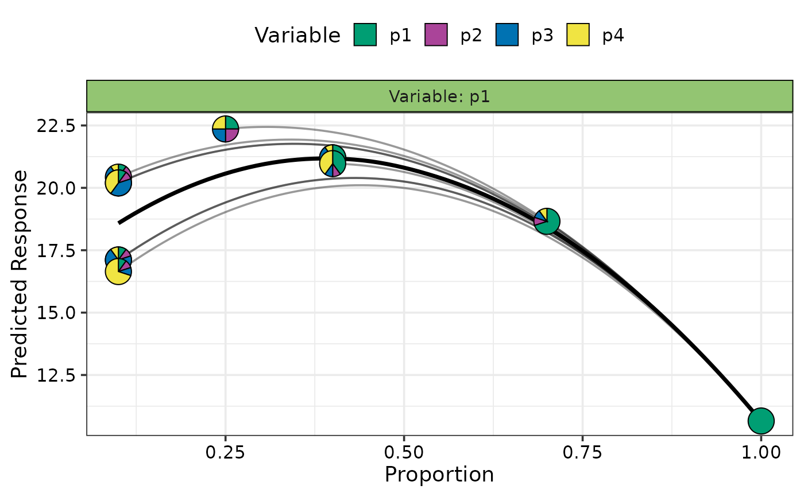
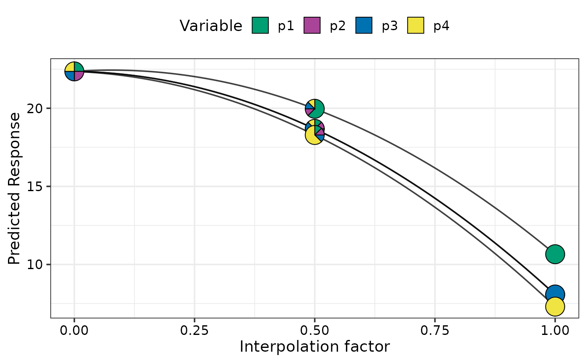

DImodelsVis: Model interpretation and visualisation for compositional data
DImodelsVis-package.RdStatistical models fit to compositional data are often difficult to
interpret due to the sum to one constraint on data variables. DImodelsVis provides
novel visualisations tools to aid with the interpretation of models fit to
compositional data. All visualisations in the package are created using the
ggplot2 plotting framework and can be
extended like every other ggplot object.
Details
Introduction to Diversity-Interactions (DI) models:
While sometimes it is of interest to model a compositional data response,
there are times when the predictors of a response are compositional, rather
than the response itself. Diversity-Interactions (DI) models
(Kirwan et al., 2009,
Connolly et al., 2013,
Moral et al., 2023) are a
regression based modelling technique for analysing and interpreting data from
biodiversity experiments that explore the effects of species diversity on the
different outputs (called ecosystem functions) produced by an ecosystem.
Traditional techniques for analysing diversity experiments quantify species
diversity in terms of species richness (i.e., the number of species present
in a community). The DI method builds on top of this richness approach by
taking the relative abundances of the species within in the community into
account, thus the predictors in the model are compositional in nature. The
DI approach can differentiate between communities with same set of species
but with different relative proportions, thereby enabling us to better capture
the relationship between diversity and ecosystem functions within an ecosystem.
The DImodels and
DImodelsMulti R packages are
available to aid the user in fitting these models. The DImodelsVis
(DI models Visualisation) package is a complimentary package for visualising and
interpreting the results from these models. However, the package is versatile and
can be used with any standard statistical model object in R where the predictor
space is compositional in nature.
Package Map:

The functions in the package can be categorised as functions for visualising model selection and validation or functions to aid with model interpretation. Here is a list of important visualisation functions present in the package along with a short description.
Model selection and validation
model_diagnostics: Create diagnostics plots for a statistical model with the additional ability to overlay the points withpie-glyphsshowing the proportions of the compositional predictor variables.model_selection: Show a visual comparison of selection criteria of different models. Can also show the split of an information criteria into deviance and penalty components to visualise why a parsimonious model would be preferable over a complex one.
Model interpretation
prediction_contributions: The predicted response for observations is visualised as a stacked bar-chart showing the contributions of each term in the regression model.gradient_change: The predicted response for specific observations are shown usingpie-glyphsalong with the average change in the predicted response over the richness or evenness diversity gradients.conditional_ternary: Fixn-3compositional variables to have specific values and visualise the change in the predicted response across the remaining three variables as a contour plot in a ternary diagram.visualise_effects: Visualise the effect of increasing or decreasing a predictor variable (from a set of compositional predictor variables) on the predicted response whilst keeping the ratio of the other n-1 compositional predictor variables constant.simplex_path: Visualise the change in the predicted response along a straight line between two points in the simplex space.
All functions aiding with model interpretation have a corresponding *_data function
to prepare the underlying data and a *_plot function which accepts this data and
creates the plot. Such a split between the data-preparation and plotting functions
results in a lot of flexibility for the user. This also enables the users to create
these visualisations with any statistical model object in R.
Other utility functions
add_prediction: A utility function to add prediction and associated uncertainty to data using a statistical model object or raw model coefficients.get_equi_comms: Utility function to create all possible combinations of equi-proportional communities at a given level of richness from a set ofncompositional variables.custom_filter: A handy wrapper around the dplyrfilter()function enabling the user to filter rows which satisfy specific conditions for compositional data like all equi-proportional communities, or communities with a given value of richness without having to make any changes to the data or adding any additional columns.prop_to_tern_projandtern_to_prop_proj: Helper functions for converting between 3-d compositional data and their 2-d projection.ternary_dataandternary_plot: Visualise the change in the predicted response across a set of three compositional predictor variables as a contour map within a ternary diagram.
References
Connolly J, T Bell, T Bolger, C Brophy, T Carnus, JA Finn, L Kirwan, F Isbell, J Levine, A Lüscher, V Picasso, C Roscher, MT Sebastia, M Suter and A Weigelt (2013) An improved model to predict the effects of changing biodiversity levels on ecosystem function. Journal of Ecology, 101, 344-355.
Moral, R.A., Vishwakarma, R., Connolly, J., Byrne, L., Hurley, C., Finn, J.A. and Brophy, C., 2023. Going beyond richness: Modelling the BEF relationship using species identity, evenness, richness and species interactions via the DImodels R package. Methods in Ecology and Evolution, 14(9), pp.2250-2258.
Kirwan L, J Connolly, JA Finn, C Brophy, A Lüscher, D Nyfeler and MT Sebastia (2009) Diversity-interaction modelling - estimating contributions of species identities and interactions to ecosystem function. Ecology, 90, 2032-2038.
See also
Useful links:
DI models website: https://dimodels.com
Package website: To be updated
Github repo: https://github.com/rishvish/DImodelsVis
Report bugs: https://github.com/rishvish/DImodelsVis/issues
Author
Maintainter: Rishabh Vishwakarma vishwakr@tcd.ie (ORCID)
Authors:
Caroline Brophy
Laura Byrne
Catherine Hurley
Examples
## Load libraries
library(DImodels)
library(DImodelsVis)
## Load data
data(sim2)
sim2 <- sim2[sim2$block == 1, ]
## Fit model with compositional data
mod <- DI(y = "response", prop = 3:6,
DImodel = "AV", data = sim2)
#> Fitted model: Average interactions 'AV' DImodel
## Model diagnostics plots but points are replaced by
## pie-glyphs showing the proportions of the compositional variables
## See `?model_diagnostics` for more information
model_diagnostics(model = mod)
#> ✔ Created all plots.

## Visualise the predicted response variable as contributions
## (predictor coefficient * predictor value) from the individual
## terms in the model
## See `?prediction_contributions` for more information
prediction_contributions(model = mod)
#> ✔ Finished data preparation.
#> ✔ Created plot.

## Visualise the change in average response over a diversity gradient
## This plot shows the change in the response over a diversity gradient
## We use richness (number of non-zero variables in a given observation)
## as our gradient in this example. The black line shows the average response
## at each level of richness while the position of the pie-glyphs show variations
## about this average whilst also showing the relative abundances of each
## variable in the composition.
## See `?gradient_change` for more information
plot_data <- get_equi_comms(nvars = 4, variables = c("p1", "p2", "p3", "p4"))
gradient_change(model = mod, data = plot_data)
#> ✔ Finished data preparation
#> ✔ Created plot.

## Visualise effects of increasing or decreasing a variable
## within a set of compositional variables
## This plot shows the effect of increasing the proportion of p1
## in several different initial compositions of the variables
## p1, p2, p3, and p4. Each curve shows the effect of increasing
## the proportion of p1 whilst keeping the relative proportions of
## the other three variables unchanged
## See `?visualise_effects` for more information
visualise_effects(model = mod, var_interest = "p1")
#> ✔ Finished data preparation.
#> ✔ Created plot.

## Visualise slices of the n-dimensional simplex as ternary diagrams.
## 2-d slices of the n-dimensional simplex are created by conditioning
## certain compositional variables at a specific value `x` while the
## remaining variables are allowed to vary within the range `0` to `1-x`.
## In this example variable p1 is conditioned to have values `0`, `0.2`, and `0.5`
## One ternary diagram is created for each case where p2, p3, and p4 are
## allowed to vary from `0` upto `1`, `0.8`, and `0.5`, respectively.
## This is equivalent to taking multiple slices of the n-dimensional simplex
## and viewing multiple slices would enable us to get a picture the change
## in the response across the n-dimensional simplex.
## For example the response is maximised where p1 is 0.2
## See `?conditional_ternary` for more information
conditional_ternary(model = mod, tern_vars = c("p2", "p3", "p4"),
conditional = data.frame("p1" = c(0, 0.2, 0.5)),
resolution = 1)
#> ✔ Finished data preparation.
#> ✔ Created plot.

## Group compositional variables into